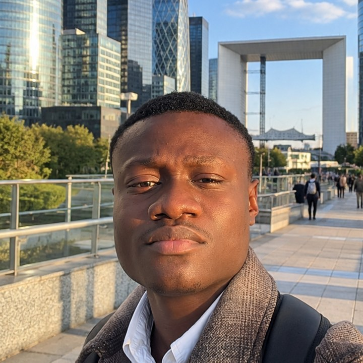

À propos
Étudiant en Master 2 Géomatique, parcours Système d'information géographique et analyse des territoires, à l'Université de Rennes 2.
Mon profil
J'ai commencé la géographie en Côte d'Ivoire, où j'ai découvert la cartographie et les données spatiales pendant ma licence, puis lors d'un stage d'un an dans un cabinet de conseil technologique à Abidjan. Je contribue à OpenStreetMap depuis novembre 2022.
J'ai poursuivi en France : licence à Angers, puis Master SIGAT à Rennes 2. Mes stages à Angers m'ont permis de produire des cartes thématiques et interactives au service de politiques publiques. Cet été, j'ai analysé des images satellitaires pour contrôler des surfaces agricoles.
Ce qui m'intéresse : transformer des données en cartes lisibles, qui aident à décider.

FS- Localisation
- Statut
Master 2 Géomatique, SIGAT · Rennes 2 - Recherche
Stage à partir de mai 2027
Parcours académique
Master Géomatique, parcours SIGAT
Université de Rennes 2, FranceLicence Géographie et aménagement
Université d'Angers, FranceProjet de groupe : qualité de l'eau dans le Maine-et-Loire.
Licence Géographie, parcours physique et environnement
Université Félix Houphouët-Boigny, Côte d'Ivoire
Formations complémentaires
- Formation en planification, suivi et évaluation de projet avec MS Project
- Formation technique sur les outils OpenStreetMap (Open Mapping et Techdays)
Compétences techniques
Classées par famille d'outils. Python et JavaScript : notions.
SIG
Télédétection
Cartographie
Données géographiques
Programmation
Dessin et projet
Domaines d'intérêt
En dehors de la géomatique : jeux de société (stratégie, logique, coopération), bricolage, football et marche.
Objectifs professionnels
Je cherche un stage de fin d'études en géomatique à partir de mai 2027. Je veux mettre mes compétences en SIG, en cartographie, en analyse spatiale et en programmation au service de projets d'aménagement du territoire, de mobilité et d'environnement.
Me contacter